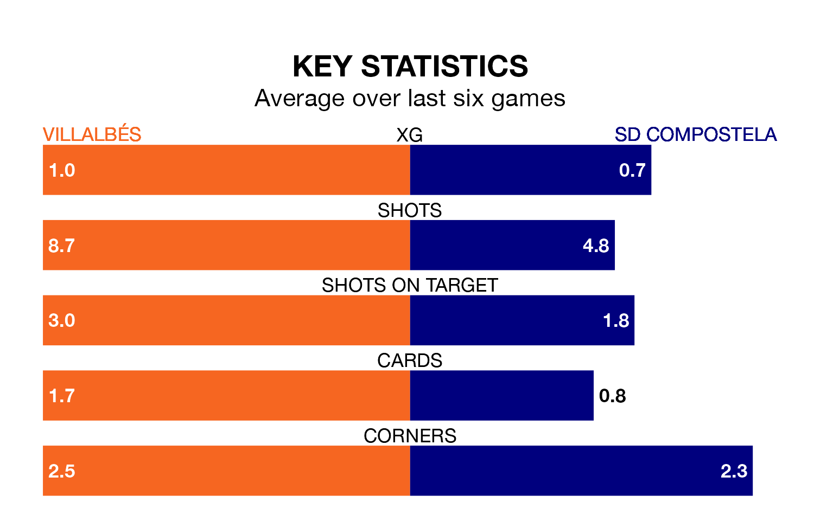

Villalbés are on a terrible run ahead of hosting SD Compostela at the Estadio Municipal A Magdalena on Sunday, with just two points collected from their last six games.
Villalbés have picked up two draws and four losses in their last six Segunda División RFEF Group 1 games, and face a Compostela side whose last six games have brought two wins and one draw.
With 16 goals in 23 games so far this season, Villalbés are the league's lowest scorers with 0.7 goals per game. But they are conceding fewer than average too, letting in 22 goals at a rate of 1.0 per game.
Compostela, meanwhile, are average scorers, with 1.1 goals per game. They have conceded 1.0 goal per game.
The away team are fifth in the table after 23 games, of which they have won 10 and drawn four, earning 34 points.
The hosts are eight places behind Compostela in 13th, with six wins and eight draws putting them on 26 points.
Villalbés's last match was on February 18, a 2-0 loss against Covadonga.
Compostela beat Deportivo La Coruña B 1-0 last time out, on February 17, with Hugo Matos González on the scoresheet.
Updated: 10:08 (UTC), 23/02/24